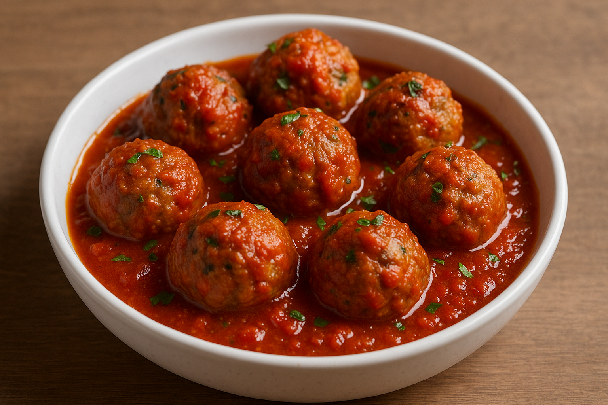

Home
Meatballs

Description
Meatballs are a hearty and flavorful dish made from ground meat mixed with breadcrumbs, egg, and seasonings. Shaped into balls and cooked until browned, they’re juicy and satisfying.
Served with tomato sauce, pasta, or on their own, meatballs are a comforting favorite in many cuisines. Easy to make and full of flavor, they bring warmth to any meal.
Ingredients
- 500g ground beef
- 1/2 cup breadcrumbs
- 1 egg
- 2 cloves garlic, minced
- 1 small onion, finely chopped
- 1/4 cup grated Parmesan cheese
- 2 tablespoons chopped parsley
- Salt and pepper to taste
- Olive oil for frying
Steps
- In a large bowl, combine ground beef, breadcrumbs, egg, garlic, onion, Parmesan, parsley, salt, and pepper.
- Mix until well combined, then shape into small balls.
- Heat olive oil in a skillet over medium heat.
- Add the meatballs and cook until browned on all sides.
- Optional: simmer the cooked meatballs in tomato sauce for 10–15 minutes for extra flavor.
- Serve hot with pasta, rice, or as an appetizer.